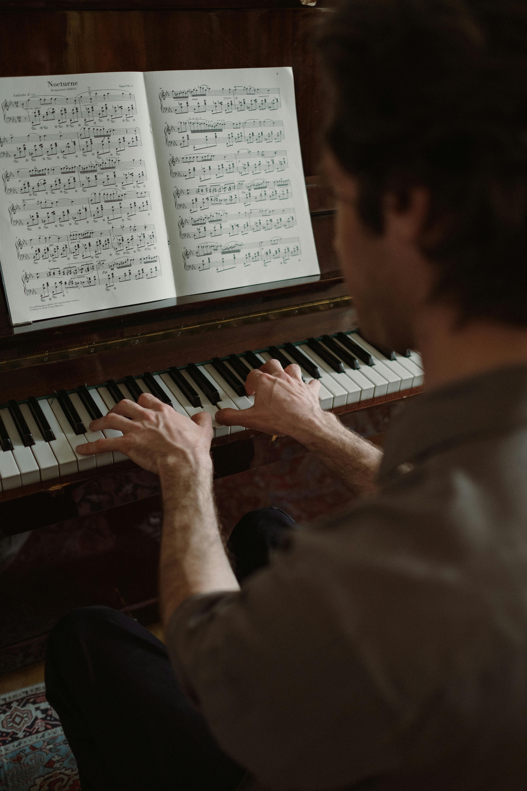
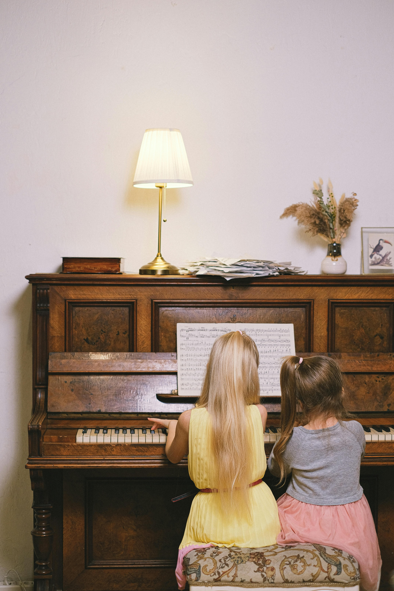
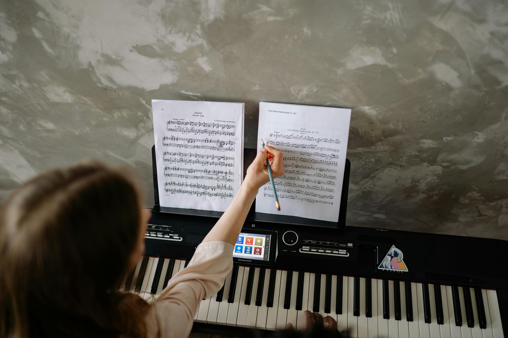
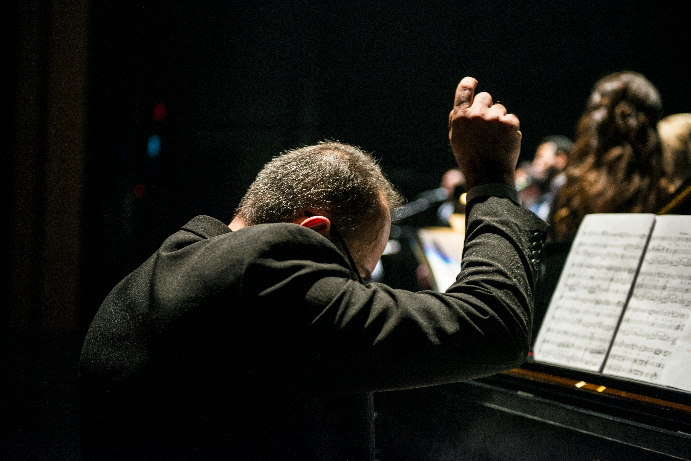

Learn to play piano the right way
Hello and welcome! I’m Mr. Erfanian, and I’m delighted to share a bit about my journey and what I can offer you and your children through my piano lessons.
With over 40 years of experience teaching piano, my passion for music and education has only deepened over time. I began my musical journey in my native Iran, where the piano quickly became a central part of my life. My studies with some of the most esteemed teachers shaped my approach to both playing and teaching, and I’ve dedicated my career to passing on this rich tradition to students of all ages.
One of the most rewarding aspects of my career is working with young students. I believe that every child has a unique musical potential just waiting to be discovered. My approach to teaching kids is designed to be engaging, supportive, and tailored to their individual needs. I understand that learning the piano is not just about mastering keys and notes but also about fostering a love for music and building confidence.
I create a nurturing environment where children can explore their musical interests and develop their skills at their own pace. My lessons are structured to be both fun and educational, ensuring that each child remains motivated and excited about their progress. I take pride in my ability to connect with young learners, making sure they feel encouraged and inspired every step of the way.
When you entrust me with your child’s musical education, you’re placing them in the care of someone who truly values their growth and well-being. My extensive experience has taught me the importance of building a strong, trusting relationship with each student and their family. I’m committed to providing a safe, supportive, and positive learning environment where your child can thrive.
My teaching philosophy is centered around patience and understanding. I recognize that every child learns differently, and I adapt my teaching methods to suit each individual’s learning style. This personalized approach helps students develop a solid technical foundation while also fostering their creativity and love for music.
The success of my students speaks for itself. Many of those who have studied with me have gone on to achieve great things in their musical careers, performing on prestigious stages and earning accolades for their talents. Seeing my students grow and succeed is one of the most fulfilling aspects of my job, and it’s a testament to the dedication and care I bring to my teaching.
In addition to my private lessons, I’ve had the pleasure of conducting masterclasses and workshops, further extending my impact on the musical community. These experiences have allowed me to share my expertise with other educators and aspiring pianists, contributing to the broader field of piano education.
Despite my many years of experience, I’m always eager to learn and grow as an educator. I stay current with the latest developments in piano pedagogy and continuously seek ways to enhance my teaching methods. This commitment to lifelong learning ensures that my students receive the most up-to-date and effective instruction possible.
Above all, what sets my teaching apart is the genuine care and dedication I bring to each lesson. I make it a priority to understand each child’s goals, challenges, and musical interests, creating a personalized experience that goes beyond the piano. My goal is not only to teach but also to inspire and support each student as they embark on their musical journey.
I invite you to join me and discover how my experience, passion, and dedication can help your child develop their musical talents. With me, you can trust that your child is in excellent hands, and together, we’ll embark on a rewarding and enriching musical adventure.
Thank you for considering me as a part of your child’s musical education. I look forward to the opportunity to work with you and your young musician.
Beginner Piano Lessons for all ages, designed to teach the fundamental and basic principles of piano playing. Suitable for children, teenagers, and adults, these lessons use modern teaching methods and cater to the needs and abilities of each age group, providing an educational and friendly environment for music enthusiasts.
 pIntermediate Piano Lessons for all ages, aimed at enhancing and improving piano playing skills. Suitable for children who have mastered the basics, as well as teenagers and adults, these lessons focus on more advanced techniques and deepening musical knowledge, providing an ideal environment to elevate playing to the next level.
Advanced Piano Lessons designed for individuals who have reached a high level of musical knowledge and experience, aimed at achieving professional-level skills and mastery of piano playing. These lessons include complex techniques, deeper musical interpretation, and preparation for professional performances and competitions.
Music Theory courses designed for all ages and levels, aimed at providing a deeper understanding of the fundamental principles and concepts of music. These courses cover the basics of music theory, including note reading, harmony, rhythm, and musical structure, preparing students for better comprehension and precise execution of music.
Performance Coaching sessions aimed at strengthening practical skills and preparing individuals for live performances. Suitable for all ages and levels, these sessions include specialized practice to build confidence, improve performance techniques, and manage stage fright, ensuring students are well-prepared for concerts and competitions.

Follow me on: